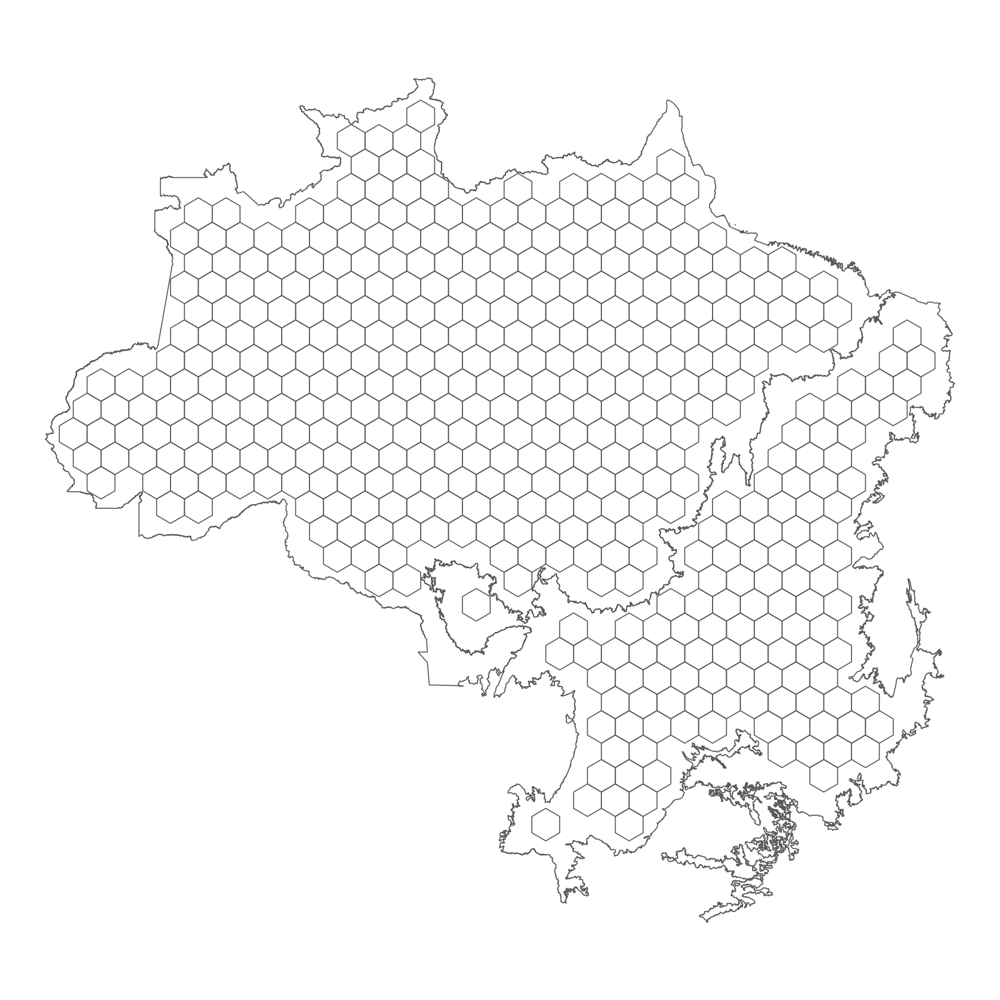

3 Methods
The study will rely on available data to develop regression and classification models to predict native vegetation suppression and its impacts. To achieve the proposed goal, I will divide the work into four major parts:
Literature overview of the main drivers of the expected outcomes (vegetation suppression, land cover transition, social and environmental variables);
Screening for available data and development of structured data collection;
Development of models;
Future projections;
The literature review will provide a theoretical and practical basis for the modeling section. Information about the key variables, their manipulation process, and the analysis techniques used to reach the results.
The database structuring will store all the relevant data in a single file structure to facilitate the modeling process.
The modeling process will follow standard procedures and libraries, with the possibility to implement different techniques.
Future projections will serve as a bridge to discuss public policy planning to mitigate the negative impacts of native vegetation suppression in the Amazon and Cerrado.
3.1 Literature Review
The literature review will address different topics. For all of them, I will adopt a hybrid approach of database searches combined with snowball searches.
The literature review will answer questions about variables to be predicted in this project. For each variable, I want to explore the main drivers that cause them, how they relate to each other, and the methods used to estimate the effects and interactions.
3.2 Database Structuring
The database will contain data from different domains, which can be available in diverse formats and structures. To make the modeling process more efficient and transparent, all variables of interest must be organized coherently. To structure a collection of data that presents different natures, I will transform all the variables into a standard grid system. The grid system will be composed of 0.2 degrees cells (40km x 40km), which should be a balanced compromise between detail and computational cost.

Each grid cell will contain an observation, for each year, for all the variables. Only pixels that contained natural vegetation in the first year of the analysis will be considered valid.
The process to create the database will consist of accessing the data sources, downloading the data to the local environment, transforming and organizing the data to the grid (if the data source provides any pre-processing tool before downloading the data, it should be done that way), and store in the local environment.
The data will be stored in a nested directories database with hive-style partitioning. The database will be composed of a collection of parquet files, a format with high compression, that facilitates processing large volumes of data. The main partition will be the variables, which means that each variable will be stored in a separate directory. If necessary, the data will be partitioned by further variables (as a rule of thumb, each parquet file should not be smaller than 20MB and not bigger than 2GB).
3.3 Model Development
The models will follow a sequential order. The output of a model will serve as a feature of the next model.
| Vegetation suppression probability | Vegetation suppression area | Land cover transitions | Transitions impacts |
|---|---|---|---|
| Classification | Regression | Classification | Regression |
The first model will classify areas that suffered vegetation suppression. So the outcome will be a binary result (0 = no suppression; 1 = suppression). I want this model to have the minimum inclusion errors for class “1”. In other words, I want to avoid classifying an area with the label “1” when the reality is that it should be labeled “0”. To achieve this, the model will be adjusted to present the minimum inclusion error for class “1”, and the probability threshold to classify an observation as class “1” will be a higher value.
The second model will predict the amount of vegetation suppression that was classified with the label “1” in the previous model. The predictions will have to be bounded by the amount of natural vegetation inside the grid cell (a Poisson distribution may be adequate to represent this variable).
The third model will predict the predominant land use transitions of the areas that suffered native vegetation suppression.
The fourth model will be a set of models. Each model will be responsible to predict a single environmental or social outcome.
Each model will follow the standard approach to develop supervised models.
To understand and interpret the predictions made by the models, I will employ a variety of methods. They may include surrogate models, feature interactions, permutation feature importance, counterfactual explanations, and Shapley values. These methods are model-agnostic, meaning they can be applied to any regression or classification model, regardless of its underlying structure or parameters. By using these techniques, I aim to gain a deeper understanding of the relationships between the variables and how they contribute to the predictions. This information will enable assessing the reliability of the models and validity of their results.